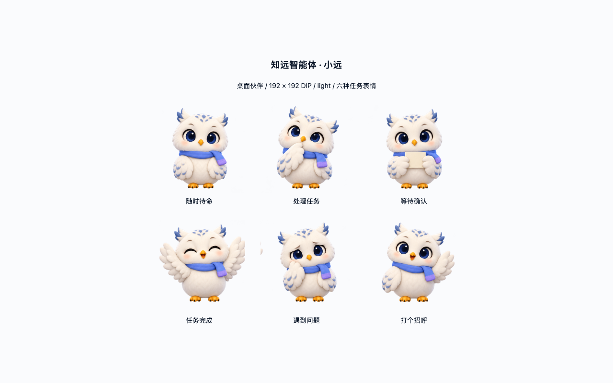
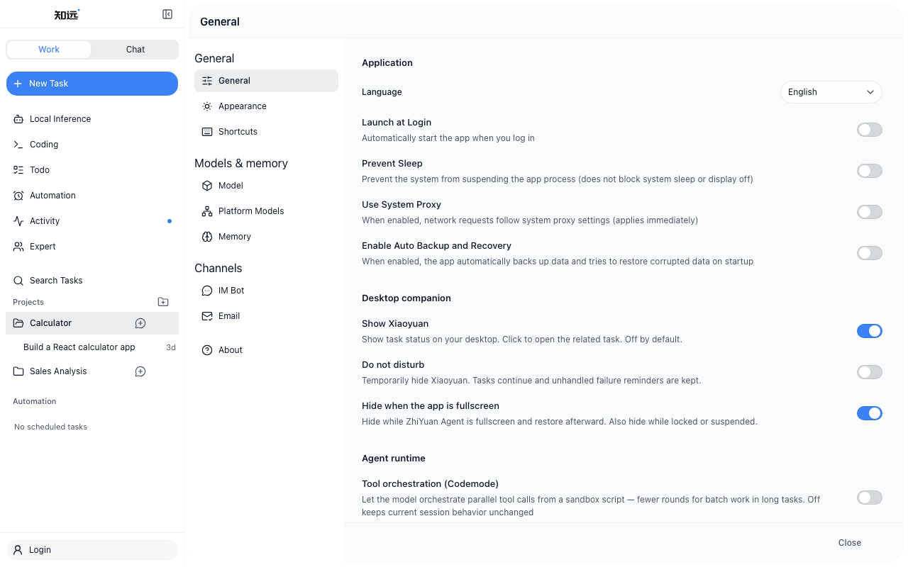
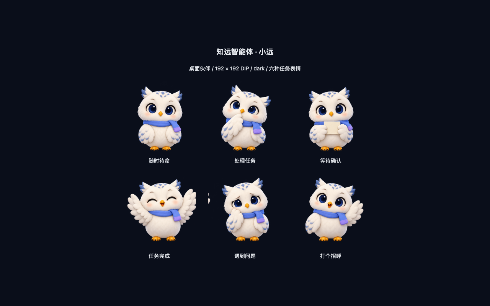

在知远智能体里，任务可以在后台安静运行，Cowork 会话里也能看见完整进度。但有时你只想确认「它还在跑吗」「是不是在等我点确认」——而不必把整个窗口拉到最前。
所以我们做了小远：一只原创的白色雪鸮，系着蓝紫色围巾，住在桌面一角的小窗里。它是陪伴，不是第二个 Agent：只读投影当前任务状态，不会替你发起模型请求，也不会改动执行内核。动画与交互借鉴了开源社区
dsh-pet（MIT）里成熟的做法，形象与素材则是知远自己的透明媒体资产。

默认尊重你的专注
小远默认关闭——我们不想用桌宠绑架任何人的工作流。想见面时，打开设置 → 通用 → 桌面伙伴，开启「显示小远」；也可以从系统托盘一键显示或收起，设置会与托盘双向同步并自动保存。
同一分组里还有几个贴心开关（均可随时改）：
- 免打扰：暂时隐藏小远，任务照常运行；未处理的失败提醒会保留。
- 应用全屏时隐藏：默认开启，全屏沉浸时不抢视线（macOS 不跨到其他应用的全屏空间）。
- 屏幕漫游：待机时沿屏幕轻轻走动，可关。
- 偶尔冒泡：待机短句陪伴；任务状态气泡始终优先，可关。

它怎么陪你
小远住在约 192×192 的逻辑像素窗口里，角色画布铺满窗口，透明像素区域穿透鼠标。你可以拖动、甩抛，它会带着一点弹簧感落在屏幕边缘；待机时还可以慢慢「散步」。右键（或等效操作）打开系统原生菜单：打开知远、查看待处理任务、打个招呼、侧看一眼、点点头、展翅一下、回到角落、收起小远——没有另造一套 App 内导航。
窗口会记住位置；锁屏或休眠时隐藏，醒来后按最新设置决定是否出现。

任务状态：看一眼就懂
小远表情与托盘文案跟随现有 Cowork 任务状态，六种姿态对应待机、思考、等待确认、完成、出错与招呼。任务进行中，角色上方会出现紧凑的状态气泡（短文案、圆角胶囊）；点击小远会带你去看当前优先任务，权限审批仍在熟悉的会话界面完成。
| 状态 | 小远在说什么（托盘 / 标签） | 气泡（进行中时） |
|---|---|---|
| 待机 | 小远 · 随时待命 | — |
| 思考 / 运行中 | 小远 · 正在处理任务 | 处理中 |
| 等待确认 | 小远 · 等待你确认 | 需要确认 |
| 完成 | 小远 · 任务已完成 | 已完成 |
| 出错 | 小远 · 任务遇到问题 | 出错了 |
| 招呼 | 小远 · 你好呀 | — |
重要原则：小远是只读投影。它消费任务状态事件来换表情和文案，不触发新的推理请求，也不替代你在 Cowork 里的任何一次确认。
偶尔的一句闲聊
如果你开启了「偶尔冒泡」，待机时小远会像朋友一样冒出短句——永远排在任务气泡之后。产品里内置的文案包括：
- 今天也一起加油呀
- 我在这儿陪着你
- 伸个懒腰……
- 需要帮忙随时叫我
- 休息一下也没关系
- 想到什么了吗？
- 天气真好呢
- 慢慢来，不着急
- 我守着呢
- 有我在就好
在菜单里点「打个招呼」「侧看一眼」等动作时，也会有「嘿嘿！」「嗯嗯」「扑棱一下」之类的小回应——纯本地动画与文案，同样不占用模型算力。
给开源社区的话
小远来自社区里「想要一点温度」的声音（#1168），也在设计规范里写清了边界：它是桌面上的伙伴，不是新的配色来源。角色精灵图位于仓库
src/renderer/assets/desktop-pet/xiaoyuan-atlas.png；应用内更多截图见
docs/theme-previews/desktop-pet-*.png。
无论你把它当作专注模式下的静音图标，还是长时间 Cowork 时的桌边守望者——开关在你手里。欢迎下载最新版知远智能体，在设置里轻轻打开「显示小远」，看雪鸮是否合你的桌面脾气。